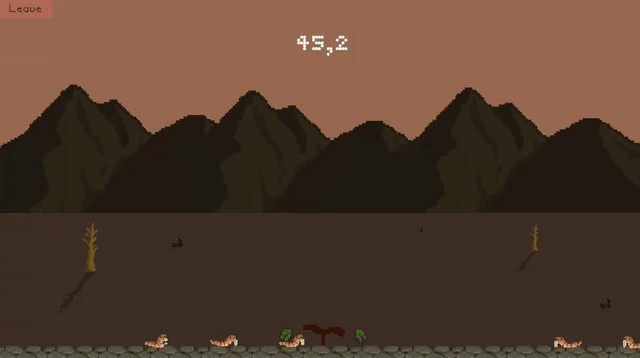

Leaf est un petit jeu de reflexes développé lors d’une game jam en Septembre 2020. Divers design patterns y ont été implémentés tels que les singletons, observer et object factory. Il a aussi été question d’expérimenter avec la mise en place d’une cinématique simple de quelques secondes afin d’en comprendre le déroulement. (Transitions, mise en scène, ratios, etc..) Nous y contrôlons deux feuilles, cherchant à défendre la dernière pousse de vie dans un paysage désert, le dernier espoir. Une recherche sur la direction artistique a permis au jeu de transmettre une impression de paysage mort lors de la première phase, puis d’y préserver la vie pour qu’elle puisse y survivre et se développer.
Testez le jeu ici !
| Mes contributions |
|
|
 |
|
|
Contactez moi à l'adresse mail suivante : cdrcmag@outlook.fr